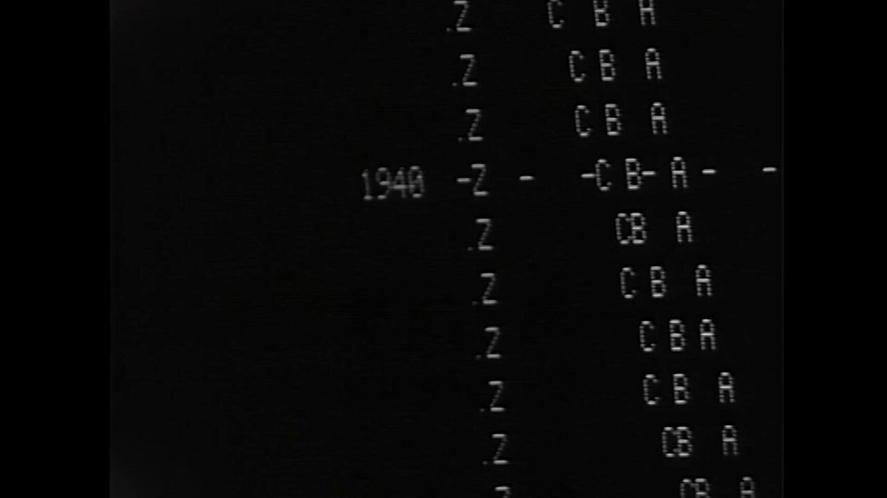

Et ces nouveaux dieux ne reculant devant rien
Étaient prêts à tout pour arriver à leur fins
Pour s'enrichir encore ils ont rasé la Terre
Pollué l'air ambiant et tari les rivières
Mais au bout de cent ans des gens se sont levés
Et les ont averti qu'il fallait tout stopper
Mais ils n'ont pas compris cette sage prophétie
Ces hommes là ne parlaient qu'en termes de profits
We live in a time of social, economic and ecological unravelling. All around us are signs that our way of living is already passing into history.
Collapse is the transition away from a globalized, hyperconnected and materially-abundant society, toward a state of greater precariousness, lesser abundance, potentially reaching a stage of existential risk for our species.

At the peak of the Seneca Cliff, the curve that describes the rapid phase transitions of complex systems on the basis of the principle that "growth is sluggish, but ruin is rapid." We see a green valley in the distance, but the road down the cliff is so steep and rough that it is hard to say whether we will survive the descent.
| Rapid | Collapse will happen rapidly on a global scale within a narrow timeframe. Local infrastructure failures, political instabilities, or extreme weather events will prevent a gradual transition. |
|---|---|
| Linear | Collapse will occur slowly and globally. Global infrastructure and production chains will be increasingly harder to maintain. Many nation-states and local communities will see their material conditions deteriorate over the years. Although this will lead to a reduction in population and welfare, the gradual transition will allow for adaptation. |
| Non-Linear | Due to ecological and infrastructural cross-dependencies, there will be a breaking point where several different and converging forces will be triggered. These will accelerate collapse before a stable situation is reached. This rate of change may be too rapid for humans to adapt to effectively. |
Creeping normalcy is how gradual changes can be accepted as the normal situation if these changes happen slowly, or incrementally.
The monetary system would not likely collapse in a random fashion but [would] be triggered when a coalition of corporate and banking interests, both public and private, determine that they are ready to profit from that transformation.

The official position of the American Academy of Pediatric Dentistry was that frequent consumption of sugary drinks can be a significant factor in the initiation and progression of dental cavities; that is, it was the official position before it accepted a million-dollar grant from Coca-Cola. Rather than recommending reductions in sugar intake, the sugar industry responded that "attention would be better focused on fluoride toothpaste."
Newer homes and furniture burn faster, giving you less time to escape a fire. Research shows that 30 years ago, you had about 17 minutes to escape a house fire. Today it's only 3 or 4 minutes.
Rates of myopia have risen sharply in recent decades, and researchers have projected that half the world will be myopic by 2050. One study by the College of Optometrists found that myopia is more than twice as common among kids in the U.K. now than it was the 1960s.
| Optimists | Pessimists |
|---|---|
| Deniers: there are no downward trends, climatic or ecological threats. The present order is not subject to threats of historic magnitude or capable of experiences compromised material and social well-being. Examples: Koch Brothers, Exxon, Clintel | Defeatists: the collapse is inevitable because we should have acted earlier. Now any technical and political solution is superfluous. |
| Technological Optimists: collapse is possible, but it is a technical problem that can be solved. In particular, new technologies in the ecological, energetic, and digital field will be able to reverse the phenomena we are observing. | Delayers: collapse is inevitable and the primary goal is to slow it down in order to extend current conditions as much as possible, making it easier to get through the collapse, and to minimize the cost in terms of human lives. |
| Reformists: collapse will be prevented by deep restructuring of the production system, welfare, and huge investments in ecological remediation. There will be a political tipping point due to the damage caused by the approaching collapse and the resistance of nation-states to act and protect the status quo. When that happens, sufficient forces will be released for radical interventions. | Post-collapsists: the collapse is inevitable and therefore we must act now to build conceptual, technical, and social tools that will serve us during and after the collapse in order to minimize long-term consequences. |
collapsology
- Dark Mountaineers: Artists who generally ascribe to the idea that climate collapse cannot be stopped or reversed, a forum in which one can be honest about their sense of dread and loss.
- Anthropocene: A proposed epoch dating from the commencement of significant human impact on Earth's geology and ecosystems, including, but not limited to, anthropogenic climate change.
- Simple pastoral: Merely another of our many vehicles of escape from reality, that doesn’t interrogate civilisation's main driving forces, but instead focuses on returning to rural simplicity.
- Freudian death drive: The hypothesis of a death instinct, the task of which is to lead organic life back into the inanimate state.
- Fossil Capitalism: A theory suggesting the modern economy is actually just a system that runs on fossil fuel.
- Age of Salvage: When a civilization breaks down, the most efficient economies are most often those that use its remains as raw material.
- Cornucopianism: Crackpot optimism, hopium.
- Drawdown: Stealing resources from the future.
- Wishcycling: Where people are hoping that something is recyclable and therefore they put it in with their recycling.
- The Jackpot: The mundane cataclysm of modernity itself. It is hundreds of millions of people driving to the supermarket in their SUVs, flying six times a year, and eating medicated animals for dinner.
If green energy investment grows, leading to an increase in total energy production, the price of energy will decrease, which means that large manufacturers will make more of the commodities they are producing, rendering their products cheaper in hopes that consumers will buy more of them. Consequently, total energy usage will increase. This applies to energy from all available sources, especially the most established ones—fossil fuels.
They suppose Hesiod as knowing most, who indeed did not recognize that day and night were one.
Imagine that software development becomes so complex and expensive that no software is being written anymore, only apps designed in devtools.
In mainstream computing, ease of use is usually implemented as superficial simplicity, as an additional layer of complexity that hides the underlying layers. Meanwhile, systems that are actually very simple and elegant are often presented in ways that make them look complex to laypeople.
Steve Jobs supposedly claimed that he intended his personal computer to be a bicycle for the mind — But what he really sold us was a train for the mind, which goes only between where rails and stations have been laid down by armies of laborers.

The major difference between a thing that might go wrong and a thing that cannot possibly go wrong is that when a thing that cannot possibly go wrong goes wrong it usually turns out to be impossible to get at and repair.Douglas Adams
Institutions will try to preserve the problem to which they are the solution.
I always told people that the thing computers are best at is adding unwanted complexity. If I am in a room full of computer professionals I think I am in a room full of people who mostly make their living dealing with computer fat. If you ask that room full of people what their companies do what will they say:
We sell software to clean up the garbage left behind by your programs. We sell software to deal with the growing complexity of your software. We just keep selling bigger upgrades to our product. We sell a bigger CPU. We sell bigger memories. We sell a service solving people's upgrade problems. We sell PCs to people who don't need them. ~
The managers were horrified at the suggestion that flawless software should be delivered since company derived its stability from the subsequent maintenance contracts.

The following text was found in a file in the DawnOS disk image, an operating system running on the Subleq virtual machine:
Imagine a computer, which requires 1 billion transistors to flicker the cursor on the screen. Imagine a world, where computers are driven by software written from 400 million lines of source code.
Imagine a world, where the biggest 20 technology corporation totaling 2 million employees and 100 billion USD revenue groups up to introduce a new standard. And they are unable to write even a compiler within 15 years.
This is our current world.
The Cloud Is Just Someone Else's Computer
A distributed system is one in which the failure of a computer you didn't even know existed can render your own computer unusable.
The debate had an interlude, in which Costanza asked Sussman why MIT had switched away from Scheme for their introductory programming course, 6.001. This was a gem.
He said that the reason that happened was because engineering in 1980 was not what it was in the mid-90s or in 2000. In 1980, good programmers spent a lot of time thinking, and then produced spare code that they thought should work. Code ran close to the metal, even Scheme -- it was understandable all the way down. Like a resistor, where you could read the bands and know the power rating and the tolerance and the resistance and V=IR and that's all there was to know. 6.001 had been conceived to teach engineers how to take small parts that they understood entirely and use simple techniques to compose them into larger things that do what you want.
But programming now isn't so much like that, said Sussman. Nowadays you muck around with incomprehensible or nonexistent man pages for software you don't know who wrote. You have to do basic science on your libraries to see how they work, trying out different inputs and seeing how the code reacts. This is a fundamentally different job, and it needed a different course.
So the good thing about the new 6.001 was that it was robot-centered -- you had to program a little robot to move around. And robots are not like resistors, behaving according to ideal functions. Wheels slip, the environment changes, etc -- you have to build in robustness to the system, in a different way than the one SICP discusses.
And why Python, then? Well, said Sussman, it probably just had a library already implemented for the robotics interface, that was all.
Our choicest plansPiet Hein
have fallen through,
our airiest castles
tumbled over,
because of lines
we neatly drew
and later neatly
stumbled over.
- The Thirty Million Line Problem
- Preventing the Collapse of Civilization
- Software Crisis
- Things That Turbo Pascal is Smaller Than
- No Formats, no Format Wars.
One of the harbingers of the coming digital age is the suspicion that we may lack the ability to make sense of our recorded ones and zeros in the future.
It was meant to be a showcase for Britain's electronic prowess, a digital Domesday Book. But 16 years after it was created, the £2.5 million BBC Domesday Project is now unreadable.
By contrast, the original Domesday Book, an inventory of eleventh-century England compiled in 1086 by Norman monks, is in fine condition in the Public Record Office and can be accessed by anyone who can read and has the right credentials.

What was it like playing Angry Birds on an iPhone 3G? We do not know; Apple is no longer distributing signed receipts for that binary. To future historians—not just of computing, but of humanity—the current period will be a dark age.
- Obsolescence of desirability: When designers change the styling of products so customers will purchase products more frequently due to the decrease in the perceived desirability of unfashionable items.
- Obsolescence of function: When an item is produced to break down or otherwise become non-functional in an abnormally short period of time.
- Obsolescence of compatibility: When a product becomes obsolete by altering the system in which it is used in such a way as to make its continued use difficult. Common examples of planned systemic obsolescence include not accommodating forward compatibility in software.
- Pseudo-obsolescence of desirability: When planned obsolescence appears to introduce innovative changes into a product, but in reality does not, often forcibly outfashioning an otherwise-useful product.

-
Paper Internet
incoming uxn devlog adaptation solarpunk collapse computing technocracy simulacra